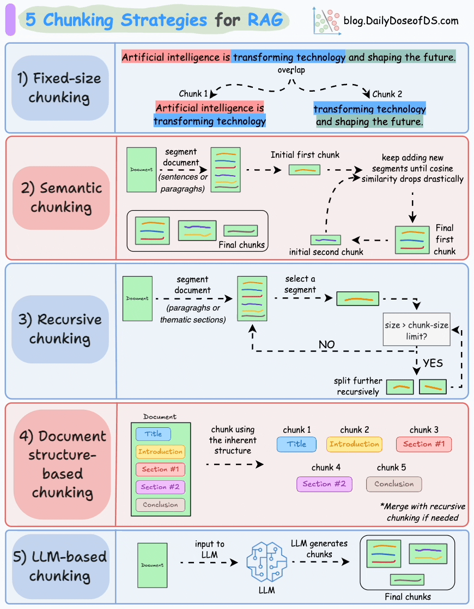
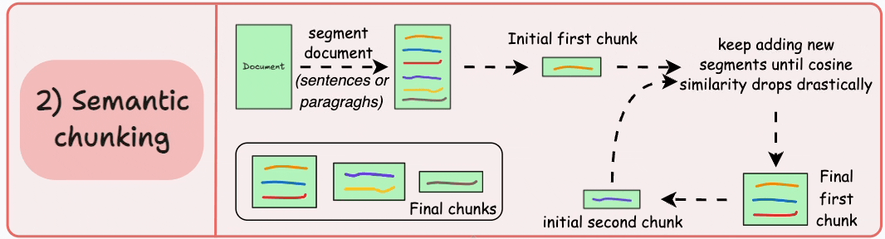

分块策略
以下是 RAG 应用程序的典型工作流程：
6878b8fa-5e74-45a1-9a89-5aab92889126_2366x990
主流主要有五种分块策略：

https___substack-post-media.s3.amazonaws.com_public_images_92c70184-ba0f-4877-9a55-e4add0e311ad_870x1116
Fixed-size chunking
固定大小的分块
98c422a0-f0e2-457c-a256-4476a56a601f_943x232
将文本以固定长度分块，overlap为每个块的重合程度
1 2 3 4 5 6 7 8 9 10 11 text = "大家好，我是果粒奶优有果粒，欢迎关注我，让我们一起探索AI。" from langchain_text_splitters import CharacterTextSplittertext_splitter = CharacterTextSplitter( separator="" , chunk_size=5 , chunk_overlap=1 , length_function=len , is_separator_regex=False , ) text_splitter.split_text(text)
Semantic chunking 语义分块

https___substack-post-media.s3.amazonaws.com_public_images_a6ad83a6-2879-4c77-9e49-393f16577aef_1066x288
先将文本分段，然后为每个段进行嵌入，若两个段有较高的余弦相似度，则合并成一个块，一直合并到余弦相似度显著下降，再从新的块开始
需要设定阈值来确定余弦相似度是否显著下降，这因文档而异。
image-20250710150106274
具体实现思路：利用滑动窗口，从第一句往后移动滑动窗口，如图，emed1与emed2相差sen3，计算出来的distance决定sen3是否加入chunk1，以此类推
1 2 3 4 5 6 7 8 9 10 11 12 13 14 from langchain_experimental.text_splitter import SemanticChunkerfrom langchain_community.embeddings import DashScopeEmbeddingsembeddings_model = DashScopeEmbeddings( model="text-embedding-v2" , dashscope_api_key="" , ) semantic_chunk=SemanticChunker( embeddings=embeddings_model, breakpoint_threshold_type="percentile" , breakpoint_threshold_amount=95 , sentence_split_regex=r'[。！？.\n]' , )
LangChain 搭配
QWen 踩坑-阿里云开发者社区
使用OpenAIEmbeddings配置embedding模型，需要设置一个关键参数
check_embedding_ctx_length = False 的作用是：
关闭 langchain_openai
在调用嵌入模型前对输入文本长度的检查与自动截断/分段逻辑。
但 DashScope 的 text-embedding-v4 接口：
对输入格式要求更严格（必须是字符串或字符串列表，不能是分段后的复杂结构）。
不接受 langchain_openai
默认生成的分段后的列表嵌套结构 。
1 2 3 4 5 6 7 8 9 10 from langchain_openai import OpenAIEmbeddings, OpenAI embeddings = OpenAIEmbeddings( api_key="sk-", base_url="https://dashscope.aliyuncs.com/compatible-mode/v1", model="text-embedding-v4", check_embedding_ctx_length = False, dimensions=1536 ) result=embeddings.embed_query("Hello, world!") print(len(result))
源代码理解见最后
Recursive chunking 递归分块
f4009caa-34fc-48d6-8102-3d0f6f2c1386_1066x316
先依据大的段落进行分块，再对每个块进行处理，若符合chunk-size的限制，则不会再分
结果可能如下
b0e40cc1-996f-48f4-9306-781b112536e4_984x428
首先，我们定义两个块（紫色的两个段落。接下来，第1段进一步拆分为更小的块。
1 2 3 4 5 6 7 8 from langchain_text_splitters import RecursiveCharacterTextSplitterrecursive_splitter_chinese = RecursiveCharacterTextSplitter( chunk_size=50 , chunk_overlap=10 , length_function=len , separators=["\n\n" , "。" , "，" , " " , "" ] )
Document
structure-based chunking 基于文档结构的分块
e8febecd-ee68-42ff-ab06-41a0a3a43cd3_1102x306
根据文档的固有结构进行分块，如markdown的一级标题二级标题等
langchain.text_splitter中有两个用于md文档分块的类，MarkdownTextSplitter与MarkdownHeaderTextSplitter
二者区别主要在：前者继承于RecursiveCharacterTextSplitter递归分块，它会尝试沿着
Markdown
格式的标题进行分割，但其核心仍然是基于字符的递归分割；后者专注于 基于
Markdown 标题的结构化分割 ，并能将标题信息作为元数据保留，更适合需要保持
Markdown 文档层级结构的应用场景。
需要注意的是MarkdownHeaderTextSplitter
本身不直接提供限制块内容长度的参数，但可以通过与
RecursiveCharacterTextSplitter
等其他文本分割器结合使用来有效控制块的大小。
1 2 3 4 5 6 7 8 9 from langchain.text_splitter import MarkdownHeaderTextSplitterheaders_to_split_on = [ ("#" , "Header 1" ), ("##" , "Header 2" ), ("###" , "Header 3" ), ] markdown_splitter = MarkdownHeaderTextSplitter(headers_to_split_on) md_header_splits = markdown_splitter.split_text(markdown_document)
存储结构类似如下
1 2 3 [Document(metadata={'Header 1': 'Foo', 'Header 2': 'Bar'}, page_content='Hi this is Jim \nHi this is Joe'), Document(metadata={'Header 1': 'Foo', 'Header 2': 'Bar', 'Header 3': 'Boo'}, page_content='Hi this is Lance'), Document(metadata={'Header 1': 'Foo', 'Header 2': 'Baz'}, page_content='Hi this is Molly')]
LLM-based chunking 基于 LLM
的分块
4d1b6d60-8956-4030-8525-d899ee61a9d5_1140x198
利用大模型进行分块
langchain没有提供官方的类实现LLM-based chunking
但是我在找到了别人实现的agentic_chunkerRetrievalTutorials/tutorials/LevelsOfTextSplitting/agentic_chunker.py
at main · FullStackRetrieval-com/RetrievalTutorials ，可供参考
后记：agentic
chunk大概的思路为先进行初步分段，按照长度或递归，然后让大模型生成这一段的概要，将段与段合并生成块，但是测试下来，一个文档的内容同质化很严重，基本上都分到一块里了，而且这个主要还是提示词工程，分块并不系统，看个乐吧
chunks-strategy-/agentic_chunker.py
at main · zxj-2023/chunks-strategy- 代码稍作更新，弃用了部分库
embedding
之前对chunking和embedding的理解不够清晰，chunking是对文本进行分块，由于大多数文本嵌入模型对输入文本长度有严格限制，如果不分块则无法embedding，从而无法更好的进行向量化或者更好地储存在知识库中，提升retriever性能；embedding则是将文本映射到向量空间，为了更好的相似度计算
语义分块的源代码实战
1 2 3 4 5 6 7 8 9 10 11 12 13 14 15 16 17 18 19 20 21 22 23 24 25 26 27 28 29 30 31 32 33 34 35 36 37 38 39 40 41 42 43 44 45 46 47 48 49 50 51 52 53 54 55 56 57 58 59 60 61 62 63 64 65 66 67 68 69 70 71 72 73 74 75 76 77 78 79 80 81 82 83 84 85 86 87 88 89 90 91 92 93 94 95 96 97 98 99 100 101 102 103 104 105 106 107 108 109 110 111 112 113 114 115 116 117 118 119 120 ''' 将文本划分成单句，可以按照标点符号划分 ''' single_sentences_list = re.split(r'(?<=[。！？])' , essay) single_sentences_list = [s.strip() for s in single_sentences_list if s.strip()] ''' 我们需要为单个句子拼接更多的句子，但是 `list` 添加比较困难。因此将其转换为字典列（`List[dict]`） { 'sentence' : XXX , 'index' : 0} ''' sentences = [{'sentence' : x, 'index' : i} for i, x in enumerate (single_sentences_list)] def combine_sentences (sentences, buffer_size=1 ): combined_sentences = [ ' ' .join(sentences[j]['sentence' ] for j in range (max (i - buffer_size, 0 ), min (i + buffer_size + 1 , len (sentences)))) for i in range (len (sentences)) ] for i, combined_sentence in enumerate (combined_sentences): sentences[i]['combined_sentence' ] = combined_sentence return sentences sentences = combine_sentences(sentences) ''' 接下来使用**embedding model**对**sentences** 进行编码 ''' from langchain_community.embeddings import DashScopeEmbeddingsembeddings_model = DashScopeEmbeddings( model="text-embedding-v2" , dashscope_api_key="" , ) combined_sentences_to_embed = [x['combined_sentence' ] for x in sentences] embeddings = embeddings_model.embed_documents(combined_sentences_to_embed) print (f"成功对 {len (embeddings)} 个句子进行了 embedding。" )for i, sentence in enumerate (sentences): sentence['combined_sentence_embedding' ] = embeddings[i] ''' 接下来需要根据余弦相似度进行切分 通过计算两个向量的夹角余弦值来衡量相似性 ''' import numpy as npdef cosine_similarity (vec1, vec2 ): """Calculate the cosine similarity between two vectors.""" dot_product = np.dot(vec1, vec2) norm_vec1 = np.linalg.norm(vec1) norm_vec2 = np.linalg.norm(vec2) return dot_product / (norm_vec1 * norm_vec2) def calculate_cosine_distances (sentences ): distances = [] for i in range (len (sentences) - 1 ): embedding_current = sentences[i]['combined_sentence_embedding' ] embedding_next = sentences[i + 1 ]['combined_sentence_embedding' ] similarity = cosine_similarity(embedding_current, embedding_next) distance = 1 - similarity distances.append(distance) sentences[i]['distance_to_next' ] = distance return distances, sentences distances, sentences = calculate_cosine_distances(sentences) breakpoint_percentile_threshold = 95 breakpoint_distance_threshold = np.percentile(distances, breakpoint_percentile_threshold) print ("距离的第95个百分位阈值是:" , breakpoint_distance_threshold)indices_above_thresh = [i for i, x in enumerate (distances) if x > breakpoint_distance_threshold] start_index = 0 chunks = [] for index in indices_above_thresh: end_index = index group = sentences[start_index:end_index + 1 ] combined_text = ' ' .join([d['sentence' ] for d in group]) chunks.append(combined_text) start_index = index + 1 if start_index < len (sentences): combined_text = ' ' .join([d['sentence' ] for d in sentences[start_index:]]) chunks.append(combined_text) for i, chunk in enumerate (chunks): buffer = 200 print (f"Chunk #{i} " ) print (chunk[:buffer].strip()) print ("..." ) print (chunk[-buffer:].strip()) print ("\n" )
参考资料
RAG
的 5 种分块策略 — 5 Chunking Strategies For RAG
一文读懂
Qwen3 最新开源的 Embedding 和 Rerank
模型优势！_qwen-rerank-CSDN博客
一站帮你选择RAG中的文本切分策略_哔哩哔哩_bilibili
LangChain
语义文本拆分指南：基于语义相似度的智能分块技术实战_langchain
语义分割-CSDN博客